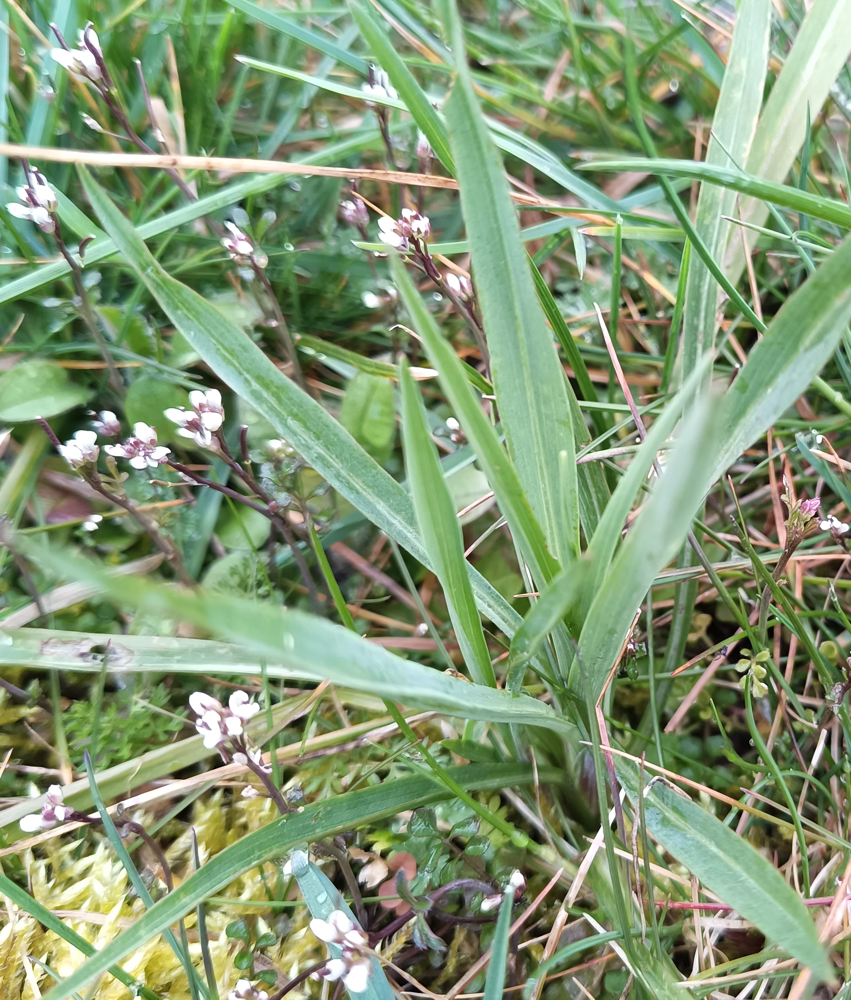
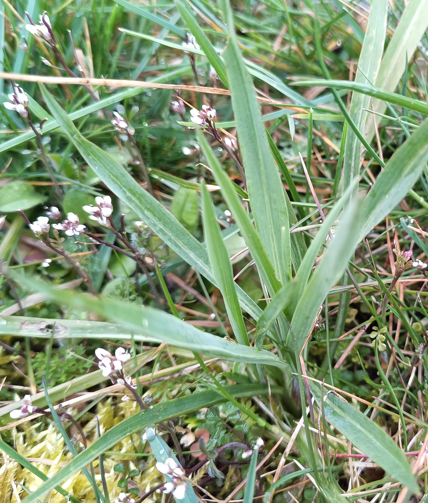

Gepflegte
Wildnis
Gepflegte
Wildnis
Willkommen
auf meiner Website über die Biotope unserer Straße in Leipzig!Ich möchte hier meine Pläne und Ziele für die Biotope wie auch die von mir beobachteten Arten für Sie jederzeit und aktuell verfügbar machen.
Tipps zum Umgang mit der Website finden Sie in der Hilfe.
Aktuelles
Letzte Bearbeitung: 01.04.2025im März blühten an mehreren Stellen Korokowii- und Elfen-Krokusse
Schwarzblaue Ölkäfer sind unterwegs (Insekt des Jahres 2020)
Beispiele aktuell blühender Pflanzen:
| Familie | Wissenschaftlicher Name | Deutscher Name |
|---|---|---|
| Korbblütler | Bellis perennis | Ausdauerndes Gänseblümchen |
| Korbblütler | Senecio vulgaris | Gewöhnliches Greiskraut |
| Kreuzblütler | Arabidopsis thaliana | Acker-Schmalwand |
| Kreuzblütler | Cardamine hirsuta | Behaartes Schaumkraut |
| Kreuzblütler | Thlaspi arvense | Acker-Hellerkraut |
| Lippenblütler | Lamium purpureum | Purpurrote Taubnessel |
| Rosengewächs | Potentilla verna | Frühlings-Fingerkraut |
| Spargelgewächs | Muscari armeniacum | Armenische Traubenhyazinthe |
| Veilchengewächs | Viola odorata | März-Veilchen |
| Wegerichgewächs | Veronica hederifolia | Efeu-Ehrenpreis |
| Wegerichgewächs | Veronica persica | Persischer Ehrenpreis |
Frisch gekeimte Zielarten:
 

einige Exemplare Bocksbart (links 05.10.24, rechts 31.03.25)
rechts außerdem blühendes Schaumkraut
selbe Acker-Witwenblume (links 08.10.24, rechts 31.03.25)
V-förmig eine einkeimblättrige unbekannte Pflanze auf
der Fläche 8 − vielleicht Kohl-Lauch − und dazwischen
schaut ein erstes Blatt vom Kleinen Odermennig hervor
Erwähnenswertes
Im Fotoarchiv sind Januar bis August 2024 fertig gestaltet.
In "Artenlisten & Statistik(en)" befindet sich die Fauna immer auf dem aktuellsten Stand, von den Pflanzen ist im Moment nur der Abschluss von 2024 vorhanden. 2024 unterschied ich zwischen 168 Pflanzenarten (schon +7 neue in 2025). Eine vorläufige Zusammenfassung der Geschehnisse (ohne Fauna) sowie erste Ideen sowie Mahdpläne für 2025 sind unter Pläne zu finden.
Hinter dem Heuhaufen wurde wieder ein Laubhaufen als Winterquartier für Igel angelegt.
(Laub auf/in hohen Bereichen − also nicht aktuellen Ansaat-Bereichen − wurde als Insektenquartier
liegengelassen werden.)
Den Laubhaufen werde ich im Vollfrühling entfernen.